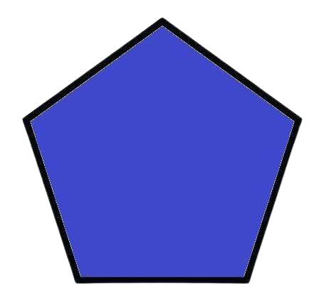

O Pentágono: Uma Figura de Cinco Lados
O pentágono é uma figura geométrica plana que possui cinco lados e cinco ângulos internos. Ele faz parte da família dos polígonos, que são figuras fechadas formadas por segmentos de reta.

Características Principais:
- Número de Lados e Ângulos: Sempre possui 5 lados e 5 ângulos internos.
- Soma dos Ângulos Internos: Independentemente do tipo de pentágono, a soma de seus ângulos internos sempre será igual a 540 graus.
Tipos de Pentágonos:
- Regular: Todos os lados possuem o mesmo comprimento e todos os ângulos internos possuem a mesma medida. É como se fosse um pentágono "perfeito".
- Irregular: Os lados e os ângulos podem ter medidas diferentes.
O Pentágono Regular: Uma Beleza Geométrica
O pentágono regular é especialmente interessante por suas propriedades simétricas e relações com outros números e figuras geométricas.
- Ângulos Internos: Cada ângulo interno de um pentágono regular mede 108 graus.
- Diagonal: As diagonais de um pentágono regular dividem a figura em triângulos isósceles.
- Relação com o Número de Ouro: O pentágono regular está intimamente ligado ao número de ouro (φ), uma proporção encontrada frequentemente na matemática. O pentágono regular possui uma relação de natureza e considerada esteticamente agradável. Essa relação se manifesta na construção do pentágono e em suas diagonais.
Construção de um Pentágono Regular
A construção de um pentágono regular pode ser feita utilizando apenas compasso e régua. Existem diversas técnicas para essa construção, algumas mais complexas que outras.
Calcular a Área de um Pentágono Regular
A área de um pentágono regular pode ser calculada de forma relativamente simples, utilizando a seguinte fórmula:
Área = (perímetro * apótema) / 2
Onde:
- Perímetro: É a soma de todos os lados do pentágono.
- Apótema: Este é o maior lado do pentágono. Ou seja, é um segmento de reta que liga o centro do pentágono ao ponto médio de um de seus lados, formando um ângulo de 90 graus com esse lado.